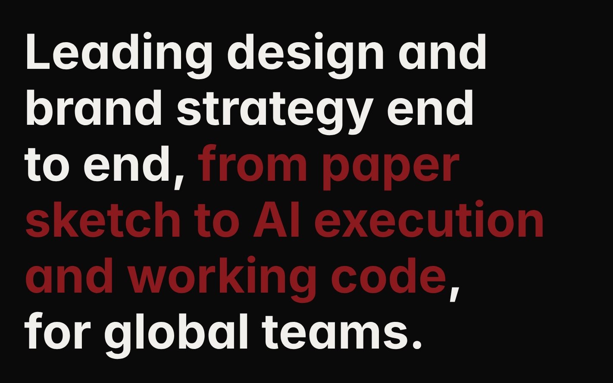
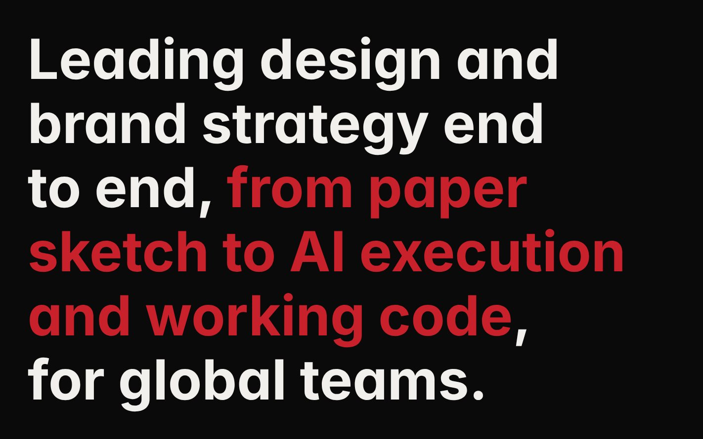

01
The headline highlight was too dark to read
The highlighted phrase on the home page used a dark wine red on black. Large text needs at least 3:1, and it had 2.1:1. It now uses the brand red from the logo, #C9212B, so the brand stays the same and the phrase is readable.

